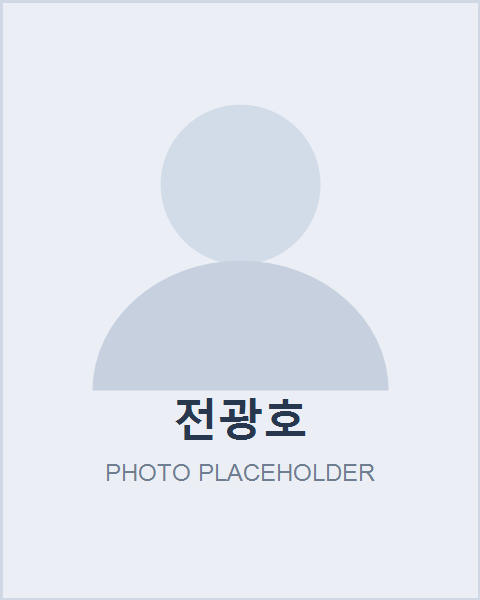

대한민국의 미래를 이끌 대전환의 ‘K-방산’ 중심지로 도약하겠습니다!
국내외 방위산업의 발전과 학문적 깊이를 더하기 위해 아낌없는 성원을 보내주시는 여러분과 전북대학교 구성원 여러분들의 홈페이지 방문을 환영합니다.

Jeon 전북대학교 국방산업연구소장
저희 국방산업연구소는 2023년 11월 01일 제11대 방위사업청장님이셨던 강은호 청장님의 지도로 처음 출범하여 2024년 2학기 방위산업융합전공 과정을 만들고, 2026년 3월 국내 첫 단독 방위산업 전공학과인 첨단방위산업학과의 출범까지 그 모든 과정의 첫 삽을 뜨고, 전북대학교 내에서 방위산업이 전북특별자치도의 비젼과 맞물린 첨단 융복합교육의 요람으로 성장하는 데에 초석이 되었다는 점에서 무한한 자긍심을 느끼고 있습니다.
글로벌 안보 환경은 급격한 기술 변화와 함께 그 어느 때보다 역동적으로 변화하고 있습니다. 단순한 무기 체계의 고도화를 넘어, AI·로봇·우주·신소재 등 첨단 과학기술이 융합된 ‘K-방산’은 이제 대한민국의 국가 안보뿐만 아니라 국가 경제를 견인하는 핵심 미래 성장 동력으로 자리 잡았습니다. 이제 저희는 더욱 도약하는 토대 위에서 우리 연구소를 '국내 최고 수준의 산·학·연·군 협력 방산 연구 플랫폼'으로 한 단계 더 도약시키고자 합니다.
모쪼록 지금까지와 같이 저희의 성장을 지켜봐 주시고, 응원해 주시고, 함께 해 주실 것을 부탁드립니다.
감사합니다.
전북대학교 국방산업연구소장 전광호